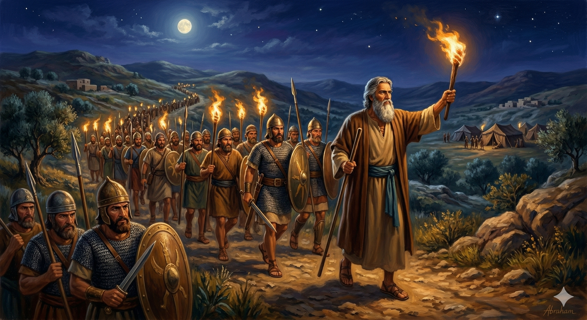

최신 묵상

아브라함 · Day 6
횃불 언약 — 하나님의 일방적 약속
창세기 15:1–21
두려움에 떠는 아브라함에게 나타나신 하나님, 별처럼 많은 자손의 약속, 그리고 오직 하나님만이 지나가신 횃불 언약의 신비.

이삭 · Day 4
리브가를 만나다 — 하나님이 예비하신 배우자
창세기 24:1–67
들에서 묵상하다 리브가를 만난 이삭. 종 엘리에셀의 기도와 하나님의 정교한 섭리가 빚어낸 아름다운 만남.

야곱 · Day 4
열두 아들의 탄생 — 고난 속의 번성
창세기 29:31–30:24
사랑받지 못한 레아의 눈물 위에 세워진 이스라엘의 열두 지파. 하나님은 깨어진 가정의 한가운데서 구원의 역사를 이루어 가십니다.

아브라함 · Day 5
롯을 구출하다 — 멜기세덱과의 만남
창세기 14:1–24
조카 롯을 구하기 위해 318명을 이끌고 나선 아브라함, 그리고 승리 후 만난 살렘 왕 멜기세덱의 축복과 십일조의 의미.
이삭 · Day 3
모리아 산의 이삭 — 번제로 드려질 뻔한 아들
창세기 22:1–19
이삭이 번제 나무를 지고 모리아 산을 오릅니다. 아버지를, 그리고 아버지의 하나님을 신뢰한 순종의 이야기.

야곱 · Day 3
레아와 라헬 — 속임수의 대가
창세기 29:21–30
혼인 잔치 아침, 베일 속 신부는 라헬이 아니라 레아였습니다. 한때 속인 자가 속임을 당하는, 은혜와 섭리의 이야기.